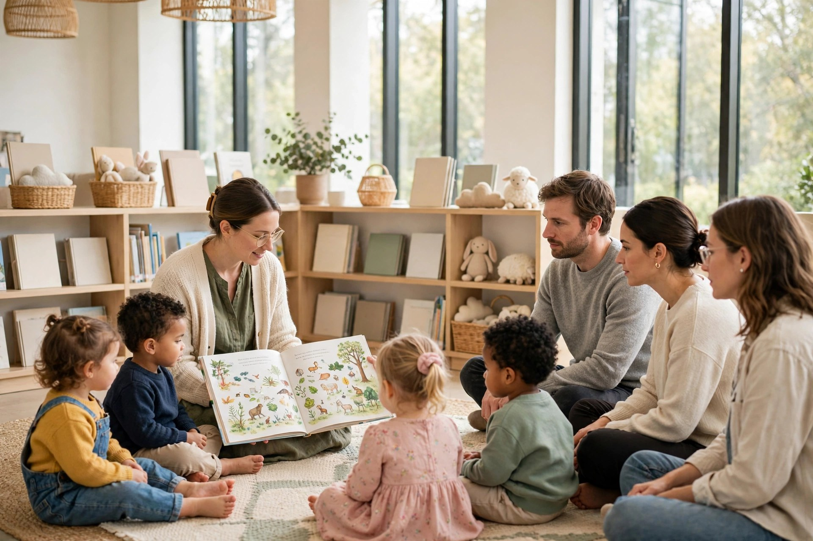

Library Storytime Survival for Parents: Thirty Minutes on the Floor, and the Stay and Play After

Thirty minutes. That is the whole formal event, and it is the first thing a tired parent should know before the carpet squares come into view. Most library storytimes run somewhere between twenty and thirty minutes. The catch is the second block nobody puts on the poster: the stay and play time right after it, which can turn a half-hour program into a full hour at the library. Plan for the hour, enjoy the half hour, and the morning stops feeling like an ambush.
Toronto Public Library makes the shape concrete. Its Toddler Time listing runs 10:00 to 10:30, and children, parents and caregivers are then invited to stay and play from 10:30 to 11:00. Two half hours, back to back, with different jobs. The first asks a parent to sit on the floor and join in. The second asks only that a parent stay in the room while small people play nearby. A tired parent can budget for those two jobs very differently.
By age band: what the session asks of you
Toronto Public Library sorts its programs for children five and under by age, and the bands matter to the adult on the floor, because each one makes a different physical demand.
| Program | Ages | What it is | The parent's job |
|---|---|---|---|
| Baby Time | Birth to 18 months | Bouncing rhymes, songs and stories | Hold, bounce, repeat. The most physical seat in the room, and the hardest to drift in. |
| Toddler Time | 19 months to 3 years | Stories, songs and rhymes | Corral gently, sing along, retrieve a wanderer now and then. |
| Preschool Time | 3 to 5 years | Stories, songs and fun activities toward a head start on school | Mostly sit, listen, and join the activity parts. The closest thing to a rest the series offers. |
| Family Time | 5 years and under | Stories, songs, rhymes and activities for mixed ages | Split attention between children at different stages. Bring patience for both ends of the room. |
None of these is a lecture. Every band is built from short pieces, and that design is the tired parent's quiet ally.
The movement breaks are doing the work
Very few storytimes are thirty straight minutes of reading. A session rotates through songs, books, and sometimes toys or a craft at the end, with about seven to ten minutes of each. The rotation exists because most toddlers and preschoolers cannot sit still for 20 to 30 minutes, so a good storytime starts with a song or marching, reads a book or two, returns to songs and activities, then comes back to the books.
Read that as a parent, not as a teacher. The child who cannot sit still is also the reason the adult never has to. Every few minutes the room stands, marches, claps or sings, and each reset lands on the grown-ups too. The real risk at storytime is rarely sleep. It is the warm, cross-legged stillness between songs, with a lap that may be radiating heat like a small stove. The programme itself will interrupt that stillness on schedule. A parent only has to last from one song to the next.
Sitting on the floor, on purpose: a short procedure
- Arrive for the outline, not just the start. Almost every library storytime follows the same outline each week, which makes the session easier to plan around. Learn your library's order once, songs, book, songs, book, and the morning becomes a set of known short blocks instead of one long unknown.
- Sit at the edge of the carpet. An edge seat gives a tired back something to lean toward, a clear view of the reader, and a quiet way out that does not cross the whole room.
- Join in, out loud. Library guidance for the session is plain: stay with your child and join in the activities. Singing the hello song badly is a better alertness tool than any amount of determined staring.
- Put the phone away properly. Storytime guidance asks families to turn phones off or set them on vibrate, and to put toys and food away. Most libraries also discourage snacks during storytime because of allergies and pests, so the phone and the snack bag leave the plan together.
- Save your best attention for the last book. The closing stretch is where children settle and the room quiets. If a drift is coming, that is when it will knock. Sing the previous song like you mean it.
What success looks like: the goodbye song starts and you can name the book that was just read, your child is more or less where the carpet says they should be, and nobody had to tap your shoulder.
Stay and play, step out, or head home
The library's own hard-days guidance is more generous than most parents expect, and it deserves to be read as permission rather than policing:
- Stay and play when the session went well. The play block after storytime is the social half of the outing: children play nearby while parents visit with other parents, and books can be checked out to take home. It asks little of a tired adult beyond presence.
- Step out and regroup when a child gets upset. The guidance says so directly: step out of the room to regroup, then quietly return. The corridor trip is also, entirely by accident, a stand, a walk, and a change of light for the adult.
- Let a child observe. Guidance asks parents to be patient if a child wants to observe instead of joining in, and notes it may take a few visits to feel comfortable. Watching from a lap is a complete storytime. Nobody is keeping score.
- Head home when home is right. A sick child means staying home and resting, and a finished parent is allowed the same logic at the door of the play block. The session was the event. The play block is an invitation, not a second shift.
One last comfort in the numbers: libraries record these sessions too. One district library lists 150 archived online storytimes running 10 to 20 minutes each. On the morning when leaving the house is genuinely beyond the household, a short recorded storytime on the living room floor is not a failure of the routine. It is the routine, at the length the day can hold.
, Grace Okafor, Family & Parenting Writer